News coverage of Mission Save Farmer 2014-15.
News coverage of Mission Save Farmer 2014-15.
SAKAL news paper dated 17th January 2015 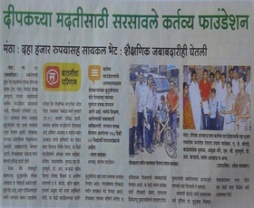 Financial aid for a boy suffering with blood cancer.
{kind=link}
SAKAL news paper dated 22nd March 2015 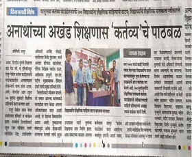 Education assistance for 200 children for the academic year of 2016.
{kind=link}
DIVYA MARATHI news paper dated 25th Jun 2016 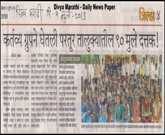 Education assistance for 90 children for the academic year of 2013.
{kind=link}
DIVYA MARATHI news paper dated 1st July 2013
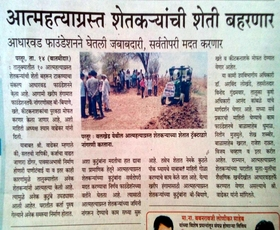 News coverage of Mission Save Farmer 2016.
{kind=link}
SAKAL news paper dated 15th May 2016 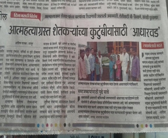 News coverage of Mission Save Farmer 2016.
{kind=link}
DIVYA MARATHI news paper dated 13th Jun 2016 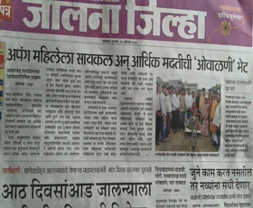 A Tricycle along with financial assistance to a physically challenged lady.
{kind=link}
DIVYA MARATHI news paper dated 18th August 2016 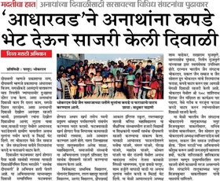 Diwali celebration with orphan kids.
{kind=link}
DIVYA MARATHI dated 2nd November 2016
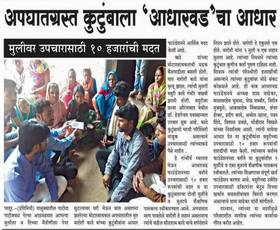 Financial help for Mayur Kade injured in accident.
{kind=link}
ANAND NAGARI dated 24 March 2016 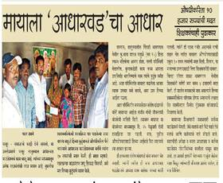 Financial aid for Maya Vahule, having heart decease.
{kind=link}
ANAND NAGARI dated 19 April 2016 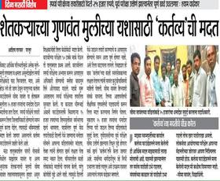 Scholarship for Seema Sawant, A farmers daughter preparing for UPSC.
{kind=link}
DIVYA MARATHI dated 11 September 2016 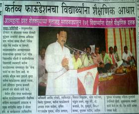 Yuvraj Sambhaji Chatrapati during Kartavya annual event Jun 2015.
{kind=link}
DAINIK PARSHVBHUMI dated 28th Jun 2015
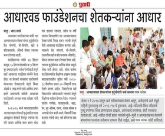 News coverage for Aadharwad's Mission Save Farmer and Kartavya's educational aid for 2017-2018
{kind=link}
DAINIK PUDHARI dated 28th April 2017 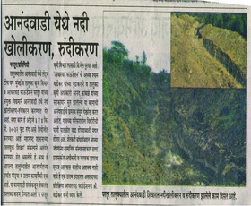 A river widening, deepening project at Anandwadi to improvise the water percolation in area.
{kind=link}
DAINIK PUNYA NAGARI dated 27th May 2017 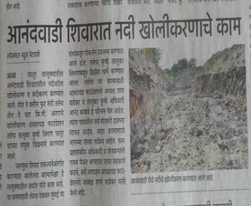 A river widening, deepening project at Anandwadi to improvise the water percolation in area.
{kind=link}
DANIK LOKMAT dated 25th May 2017 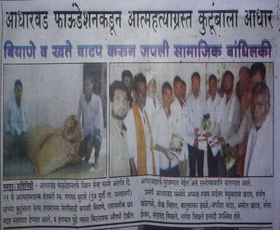 Mission Save Farmer 2017.
{kind=link}
PUNYA NAGARI dated 22nd May 2017
 Emergency Medical Aid to Santosh Paikrao for his Thalassaemia decease treatment.
Emergency Medical Aid to Santosh Paikrao for his Thalassaemia decease treatment.
DANIK PUDHARI - 7th September 2017 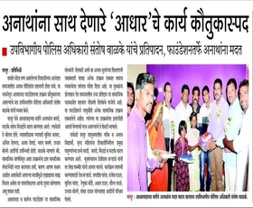 'Spread A Smile' event on Diwali festival
{kind=link}
DANIK PUDHARI - 22nd October 2017 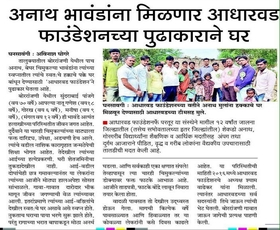 Aadharwad Foundation have built a home for homeless children of a prisoner.
{kind=link}
DANIK PUDHARI - 9th December 2017 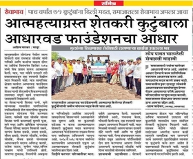 Mission Save Farmer 2018 - Helping hand for deceased farmer's family.
{kind=link}
DIVYA MARATHI - 14th May 2018
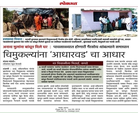 Aadharwad Foundation have built a home for homeless children of a prisoner.
{kind=link}
DANIK LOKMAT - 3rd Jun 2018 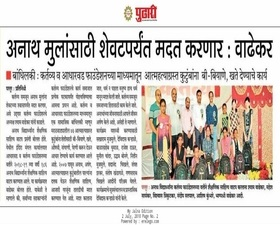 Educational help to total 186 students for the academic year 2018-19
{kind=link}
DANIK PUDHARI - 2nd July 2018 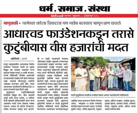 Medical Aid to Parameshwar Tarase, a victim of Electricity accident
{kind=link}
DIVYA MARATHI - 5th October 2018 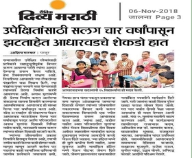 'Spread A Smile' event on Diwali 2018
{kind=link}
DIVYA MARATHI - 6th November 2018